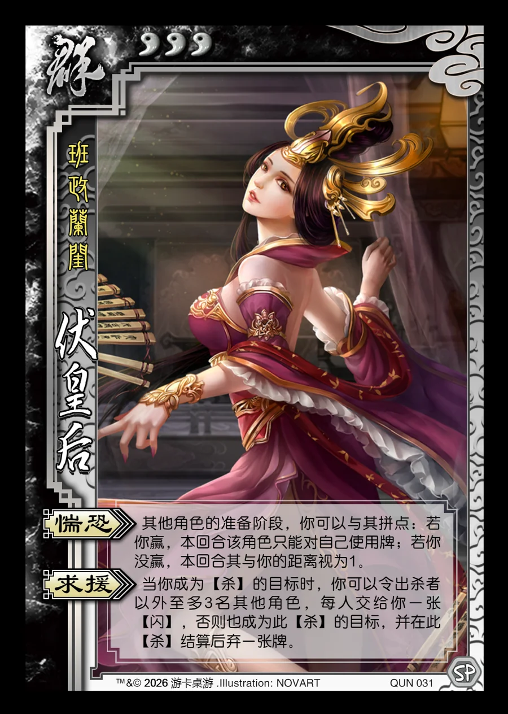

点击卡面查看大图
群
伏皇后
♥3班政兰闺
惴恐
其他角色的准备阶段，你可以与其拼点：若你赢，本回合该角色只能对自己使用牌；若你没赢，本回合其与你的距离视为1。
求援
当你成为【杀】的目标时，你可以令出杀者以外至多3名其他角色，每人交给你一张【闪】，否则也成为此【杀】的目标，并在此【杀】结算后弃一张牌。

点击卡面查看大图
班政兰闺
其他角色的准备阶段，你可以与其拼点：若你赢，本回合该角色只能对自己使用牌；若你没赢，本回合其与你的距离视为1。
当你成为【杀】的目标时，你可以令出杀者以外至多3名其他角色，每人交给你一张【闪】，否则也成为此【杀】的目标，并在此【杀】结算后弃一张牌。